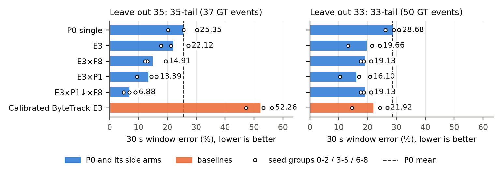

| 組員 | 學號 | 主要負責 |
|---|---|---|
| {{NAME1}} | {{ID1}} | 資料與評估 |
| {{NAME2}} | {{ID2}} | 偵測、實驗 2 |
| {{NAME3}} | {{ID3}} | 追蹤、改進、實驗 1 |
| {{NAME4}} | {{ID4}} | 計數、視覺化、demo、報告 |
巢口流量，也就是離開和回到蜂箱的蜜蜂數量，能直接反映蜂群的活動，但靠人眼計數沒辦法大量進行。BeeTrack 在蜂巢口影片中找出每一隻蜜蜂，隨時間追蹤牠，並計算有多少蜜蜂進出。蜜蜂由在 BEE24 資料集上微調的 YOLO11-s 偵測器找出。嚴格的第一階段追蹤器只把幾乎完全重疊的框接起來，所以每一段短的小軌跡很可能只屬於一隻蜜蜂。接著由只看幾何資訊的小型網路 TrackletLink 離線決定哪一段小軌跡接續哪一段。一條軌跡從巢口區域外開始、在區域內結束，算一次進；反過來算一次出。我們主要用 30 秒窗計數誤差評估系統：每 30 秒比較一次預測與真實的進、出次數，把差值加總，再除以真實事件的總數。在偵測器訓練時看過的蜂箱上（val + dev，486 次事件），主流程 P0 的窗誤差是 18.46%（三個偵測器的平均），計數經過校正的 ByteTrack 是 34.82%，預設 ByteTrack 是 40.18%。在偵測器沒看過的蜂箱上，結果比較差。在留一蜂箱測試中，P0 在兩個留出的蜂箱上分別是 22.18% 與 23.90%，在兩個片段很短的留出場景上是 33.97% 與 36.60%。把多個偵測器、多種輸入尺度或翻轉後影片的窗計數取平均，在部分折上降低了誤差，但沒有任何事先寫下的規則在兩折上都明顯勝過 P0。有一條規則通過了兩折，但它是看過這些結果之後才設計的，之後在四個新的檢查中也只有兩個得到確認。因此主系統仍是 P0，做平均的各臂只當附帶結果。在五支官方測試影片上（405 次事件，鎖定設定只跑一次），P0 的窗誤差是 [test]，校正 ByteTrack 是 [test]。
關鍵詞：多目標追蹤、小軌跡連結、蜜蜂監測、YOLO11、ByteTrack、巢口計數、領域偏移、留一蜂箱
養蜂人與授粉研究者會觀察蜂巢口，因為外出採集的流量會很快反映天氣、蜜源、農藥與疾病的變化。在巢口架一台攝影機很便宜，但把影片轉成數字並不容易。幾分鐘的影片就有上千次短距離飛行，人工計數又慢又容易出錯。如果有系統能追蹤每一隻蜜蜂並算出進出數量，就能做到連續而客觀的監測。
多數多目標追蹤器是為行人設計的，而蜜蜂比行人難追。在 950 × 600 的畫面中，一個蜜蜂框只有大約 46 × 50 像素。數十隻蜜蜂外觀幾乎一樣，外觀特徵幫助不大。蜜蜂會在幾格之內加速、轉向或降落。巢口又是畫面中最擁擠的地方，偏偏計數就發生在這裡。巢口的一條軌跡斷掉，一次進就變成兩段什麼都不算的半截軌跡；一次錯誤的連結，則可能把只是飛過的蜜蜂算成一次進。
還有第二個困難，是我們一開始低估的：測試時的蜂箱是新的。偵測器只用四個蜂箱訓練，在我們的紀錄中，五支測試影片都當作沒有任何偵測器看過的蜂箱。一個在訓練蜂箱上算得準的系統，到了新蜂箱仍可能算不準；本專題有很大一部分工作就是在量測這件事。
第一份報告提出運動自適應關聯，也就是在 ByteTrack 內部做的一組修改，並在測試集的 341 次事件上計算巢口進出。之後有四件事改變了；第一份報告的所有數字都被取代，不和本報告混用。
本系統對應課程的 Project 1。輸入是蜂巢口影片（影片檔或影格資料夾）。輸出包括：每一格中每隻蜜蜂的框與追蹤 ID；每個 ID 的軌跡；巢口的進出次數，含總數與每個 30 秒窗的次數；標註後的影片；以及所有軌跡的 CSV 檔。目標依照課程要求：微調一個能偵測蜜蜂的深度偵測器（R1）；建立在漏偵測、快速飛行與短暫遮擋下仍能維持身分的追蹤器，並能計數（R2）；提出有理由的改進，在相同偵測結果下與 ByteTrack 比較（R3）；至少兩組一次只改一個因素的對照實驗（R4）；至少三種條件下的穩健性分析（R5）；以及能端到端處理影片的 demo 程式（R6）。
物件偵測。YOLO 系列 [1] 屬於單階段偵測器，一次前向傳遞就預測出所有框，是即時 tracking-by-detection 最常見的選擇。我們使用 YOLO11 [2] 的 small 版本。RT-DETR [3] 等 Transformer 偵測器速度相近，但需要的記憶體與訓練時間超出我們 8 GB 筆電 GPU 的負擔。
Tracking-by-detection。SORT [4] 以等速 Kalman filter [5] 與以 IoU 為代價的匈牙利配對 [6] 連結偵測框。DeepSORT [7] 加入重識別特徵，但所有目標長得一樣時幫助不大。ByteTrack [8] 在第二階段也會配對低信心分數的偵測框；它是 Ultralytics 的預設追蹤器，也是我們的基準。BoT-SORT [9] 加入相機運動補償與外觀特徵，但 BEE24 的相機是固定的。OC-SORT [10] 在軌跡跟丟之後，用觀測值重新估計 Kalman 狀態。
不規則運動。DanceTrack [11] 指出，在 MOT17 [12] 與 MOT20 [13] 上調好的追蹤器，遇到外觀相同、運動多變的目標時會變差，這正是蜜蜂的情況。C-BIoU [14] 在計算 IoU 前先放大框，讓快速物體仍能配對。我們的第一份報告就是以這個想法為基礎；現在系統的第一階段仍使用緩衝 IoU，只是用法很嚴格。
離線連結。在看得到整段序列的情況下，事後把短的小軌跡接起來，是多目標追蹤裡很早就有的想法，用延遲換取更好的決定。我們的連結器刻意做得很小：它只看中斷兩端的幾何資訊，因為在我們自己的測試中，外觀特徵分不太出不同的蜜蜂（第 12.4 節）。
昆蟲追蹤與計數。Bozek 等人 [15] 追蹤蜂巢內部密集的蜜蜂。BEE24 資料集 [16] 與 TOPICTrack 一起發表，這個方法平行進行運動與外觀關聯；我們把它釋出的追蹤器當作基準（「論文的追蹤器」）。Lei 等人 [22] 以 YOLOv8m、OC-SORT 與一個方框形的計數區域，在巢口計算蜜蜂數量；我們在自己的軌跡上測試了他們的方框規則（第 12.4 節）。這兩篇論文發表的數字使用不同的偵測器與協定，因此不直接比較。
評估。CLEAR MOT 指標 [17]（MOTA、ID 換錯）很受偵測品質影響；IDF1 [18] 衡量身分是否一致；HOTA [19] 則平衡偵測與關聯。這些指標都以 TrackEval [20] 計算。人工影像劣化的設計參考 Hendrycks 與 Dietterich [21] 的精神。
BEE24 [16] 共有 36 支蜂巢口影片，25 fps（約 950 × 600 px；其中一段為 810 × 430），共 446,908 個框、4,559 個蜜蜂身分。每個框都帶有 MOTChallenge 格式的追蹤 ID（frame、id、x、y、w、h），可以計算以身分為基礎的追蹤指標。資料可公開下載，大小 2.3 GB。資料集頁面沒有寫明授權，因此我們只在本課程中使用並引用論文。影片中只有昆蟲，沒有拍到任何人。
訓練影片來自四個蜂箱：白色板（BEE24-01 到 -11、-14、-15）、灰色板（BEE24-17 到 -32），以及兩個單一場景 BEE24-33 與 BEE24-35。BEE24-33 是擁擠的蜂箱（最後 1,000 格平均每格 37.3 隻蜜蜂），BEE24-35 則比較稀疏（9.8 隻）。這兩個蜂箱用在沒看過蜂箱的代理實驗。
官方切分為 31 支訓練影片與 5 支測試影片。測試影片（BEE24-12、-13、-16、-34、-36）只跑一次，設定事先鎖定。短的訓練影片（75 到 258 格）每格的蜜蜂數遠少於長影片，如果驗證集只用整段短影片，會把系統調到錯誤的情境。因此我們留出四段短影片（BEE24-10、-15、-24、-28），另外再留出長影片 BEE24-33 與 -35 的最後 1,000 格（稱為「尾段」）。每段尾段與訓練影格之間隔著 50 格，這段不屬於任何切分。BEE24-33 與 -35 的前 3,950 格（稱為「前段」）是偵測器的訓練影格；我們仍在上面評估追蹤，稱為 dev，也清楚那裡的偵測結果偏樂觀。val 與 dev 合稱看過的蜂箱。common.py 定義各個切分，prep.py 以 assert 檢查沒有任何一格同時屬於兩個切分。
表 1. 資料切分與真值事件。一次事件是指在第 6.4 節計數規則下的一次進或一次出。
| 切分 | 內容 | 影格數 | 真值事件 | 用途 |
|---|---|---|---|---|
| 訓練 | 27 支官方訓練影片（BEE24-33、-35 只用前段） | 10,060（3,740 張影像） | – | 偵測器微調 |
| 驗證（val） | BEE24-10、-15、-24、-28；-33、-35 的尾段（第 4001–5000 格） | 2,640 | 173 | early stopping；所有追蹤器與連結器的選擇 |
| dev | BEE24-33、-35 的前段（第 1–3950 格） | 2 × 3,950 | 313 | 追蹤器與連結器的選擇（偵測結果偏樂觀） |
| val + dev | 「看過的蜂箱」 | 486 | 主要的開發數字（表 7） | |
| 35-head / 33-head | 前段，用從沒看過該蜂箱的偵測器評估 | 每段 3,950 | 129 / 184 | 沒看過蜂箱的代理（表 13–14） |
| 35-tail / 33-tail | 尾段，偵測器同上 | 每段 1,000 | 37 / 50 | 新片段檢查（表 15） |
| 白板（留出） | 13 段白板片段（BEE24-01–11、-14、-15）；9 個種子的偵測器與連結器都沒有用它們訓練 | 1,600 | 137 | 第三折，事先登記（表 15b） |
| 灰板（留出） | 16 段灰板片段（BEE24-17–32）；9 個種子的偵測器與連結器都沒有用它們訓練 | 1,200 | 152 | 第四折，事先登記（表 15c） |
| 測試 | BEE24-12、-13、-16、-34、-36（官方） | 10,762 | 405 | 鎖定設定跑一次（表 8） |
表 2. 測試影片與 v2 協定下的真值事件。
| 影片 | 影格數 | 真值 進 | 真值 出 |
|---|---|---|---|
| BEE24-12 | 250 | 1 | 3 |
| BEE24-13 | 258 | 10 | 11 |
| BEE24-16 | 254 | 26 | 37 |
| BEE24-34 | 5,000 | 84 | 88 |
| BEE24-36 | 5,000 | 91 | 54 |
| 合計 | 10,762 | 405 | |
merge_handovers），因為 BEE24-33 的訓練部分常常在同一隻蜜蜂上換 ID。val 與測試集的真值維持原樣。zones.json）。BeeTrack 是一套 tracking-by-detection 流程，後面再加上一道離線的第二階段處理（圖 1）。鎖定的主要設定稱為 P0。
圖 1. P0 的系統方塊圖與資料流。
資料流。prep.py 把原始標註轉成 YOLO 標籤、影像清單與 TrackEval 真值。train.py 微調偵測器。detect.py 對每一格評估影格只跑一次偵測器，並快取框（frame, x1, y1, x2, y2, score），也可以先加上人工劣化。track.py 逐格把快取的框餵給追蹤器；它的 link 預設組就是第一階段，後面接 link.py 與短軌跡過濾。evaluate.py 包含事件規則、重複 ID 的切分與事件配對。demo.py 對任意影片執行線上路徑。
為什麼要快取偵測結果。有好幾個實驗只能改變追蹤器。偵測器只跑一次，再把完全相同的框重播給每一個追蹤器，就能排除偵測每次執行的差異，讓比較完全受控。
還沒放進套件的部分。窗誤差的計分程式、交叉擬合的連結器模型、測試用連結器 m_dev_strict.json，以及本報告各實驗的執行腳本，目前都放在我們的實驗腳本中，不在 beetrack 套件內。套件附的連結器模型（link_model.json）是另一次擬合的結果。我們把這點列為限制（第 15 章）。
YOLO11-s 是 anchor-free 的單階段偵測器，由 CSP 式骨幹、特徵金字塔頸部，以及在 stride 8、16、32 上的 decoupled head 組成。P0 一律以 640 px 執行偵測器；附加臂 P1（第 6.6 節）則替每支影片選不同的尺度。偵測結果保留到分數 0.05，因為 ByteTrack 和我們的第一階段都會用到低分框。
線上追蹤器每一格都必須做決定。遇到跳動或衝刺的蜜蜂時，它不是放掉這條軌跡（之後會漏算），就是讓 ID 延續到旁邊的蜜蜂上（之後會多算）。我們把這件事拆成兩步。第一階段只把幾乎完全重疊的框接起來，所以每段小軌跡很可能只屬於一隻蜜蜂。它就是第一份報告中的 BeeTracker（ByteTrack 的子類別），只是改用嚴格的設定（表 3）：
表 3. 預設 ByteTrack（基準）與 P0 的第一階段（track.py，預設組 link）。
| 參數 | ByteTrack | P0 第一階段 | 意義 |
|---|---|---|---|
| track_high / low thresh | 0.25 / 0.1 | 0.25 / 0.1 | 兩個關聯階段的分數門檻 |
| new_track_thresh | 0.25 | 0.25 | 開新軌跡所需的最低分數 |
| match_thresh、fuse_score | 0.8，開 | 0.3，關 | 第一階段的最大代價（0.3 = 緩衝 IoU ≥ 0.7） |
| track_buffer | 30 | 2 | 跟丟軌跡保留的影格數 |
| 基本邊界 / 跟丟增量 / 速度增益 | 0 / 0 / 0 | 0.1 / 0 / 0.5 | 計算 IoU 前的框放大量 |
| 衰減 δ、速度雜訊 wv | 1、1/160 | 0.8、1/80 | 跟丟軌跡的速度衰減；Kalman 速度雜訊 |
| 輸出 | 已確認的軌跡，Kalman 框 | 每個框，原始框 | |
| 額外 NMS | – | IoU 0.5 | 第二次抑制重複框 |
候選。對每一段結束的小軌跡 i，所有在 1 到 25 格後開始的小軌跡 j 都是候選，條件是跳躍距離每格中斷最多 3 個體長，總共最多 6 個體長。體長定義為框面積的平方根。25 格的上限和計數協定中重複 ID 的上限相同。
特徵。每個候選給網路 25 個數字，長度都以體長為單位：中斷長度；直線距離（也換算成每格）；i 的速度往前外插、j 的速度往後外插，各自離另一端有多遠；兩個速度各自與跳躍方向的餘弦；框寬與框高的變化，以及兩個端點框的 IoU；兩段的速度、長度與分數；「三點共線」測試（把跳躍延伸到只有一兩個框的小軌跡之外時，最近的第三段小軌跡有多近）；以及每個框是否沿跳躍方向拉長，因為飛行中的蜜蜂會沿著身體方向模糊。
網路與標籤。多層感知器有兩層隱藏層、每層 32 個單元，輸入是標準化後的特徵，以二元交叉熵訓練（Adam，學習率 10−3，weight decay 10−4，30 個 epoch，batch 2,048）。標籤來自真值：如果 i 最後一個框下的蜜蜂就是 j 第一個框下的蜜蜂，而且 j 正是這隻蜜蜂下一段小軌跡開始的地方，標為 1；如果是不同的蜜蜂，或其中一個框不在任何蜜蜂上，標為 0；其餘不使用。PyTorch 只用來擬合；推論只是幾行 NumPy，讀一個存權重的 JSON 檔。
連結。一段序列的所有候選一次評分。從最有把握的開始，如果它的結尾端與開始端都還沒被用掉，就保留這個連結，一直做到機率低於 0.15 為止。這是貪婪法，不是最佳解，但很簡單，而且每段小軌跡的結尾與開始都只用一次。
哪裡用哪個連結器。在測試集上，P0 使用一個固定的連結器（m_dev_strict.json）。這個連結器擬合時看過 dev，所以在 val + dev 上我們改用三個交叉擬合的連結器，每個都沒看過它所評分的序列，並報告平均。在 val + dev 上，m_dev_strict.json 的結果是 19.56%（只報告）。
連結之後，框數少於 3 的軌跡會被捨棄。接著套用協定中的事件規則（在測試執行前已鎖定），預測軌跡與真值軌跡都一樣處理：
區域規則只看軌跡相對於巢口從哪裡開始、在哪裡結束，這才是「進巢」的意思。它的弱點是軌跡斷裂：在擁擠的巢口裡斷掉的軌跡，會變成兩段都不計的半截軌跡。
整支影片的總數會讓誤差互相抵消：漏算十次進、又多算十次進，總數仍然完全正確。事件 F1 則是另一個極端：事件必須在幾格之內落在正確的蜜蜂上才算對。養蜂人在意的是介於兩者之間的東西：每一小段時間內有多少蜜蜂進出。因此我們把影片切成 30 秒的窗，逐窗比較次數。
對一支影片的一個窗 w，令 Iw、Ow 為真實的進、出次數，Îw、Ôw 為預測次數。這個窗的代價是 |Îw − Iw| + |Ôw − Ow|。舉例：實際有 4 隻蜜蜂進、3 隻出，我們預測 5 進 3 出，這個窗的代價是 1。如果預測 3 進 4 出，代價是 2，即使總數 7 是對的。窗的邊界落在哪裡是運氣，所以我們把窗格平移 o = 0, 1, …, 29 秒，整個計算重做一次，再取平均。最後對所有影片加總，再除以真值事件數 N：
數值越低越好，0% 代表每個窗都完全正確。它沒有 100% 的上限：憑空多出很多事件的系統可以超過這個值。為了對尺度有個感覺：一個知道每支影片真實總數、並把總數平均分配到各窗的參考，在 val + dev 上是 18.28%，35-head 是 23.29%，33-head 是 22.04%。我們的系統不知道真實總數，所以它不是基準，但可以看出時間分布和總數一樣重要。
次要指標。事件 F1：一次預測事件算正確的條件是，在它某一次同方向的穿越時，軌跡落在一隻真值蜜蜂上（框 IoU ≥ 0.5，也報告 0.3 的結果），這隻蜜蜂在 ±5 格內以同方向穿越，而且在該方向上有真值事件；配對是一對一。偏差 = 預測事件數 − 真值事件數，可以分辨是多算還是少算。第 11.3 節列出標準的追蹤指標。
除了 P0，我們也測試了幾個臂（arm），目的是讓計數比較不受單一偵測器錯誤的影響。它們改變的是要平均幾次流程的結果，或是輸入尺度。平均後的次數可能是小數，所以這些臂沒有定義事件 F1。
表 4. 各臂。全部共用 P0 的第一階段、連結器、過濾與事件規則。
| 臂 | 定義 |
|---|---|
| P0 | 主要設定，固定 640 px |
| P1 | 每支影片依閃爍度選輸入尺度：在整支影片上分別以 352、448、640、960、1280、1600 px 執行，保留分數 ≥ 0.25 的框；閃爍度 = 相鄰影格框數變化的平均絕對值除以平均框數；取閃爍度最小者，相對差距小於 2% 視為平手，由較小的尺度勝出；不到 1,000 格的影片用 640。完全不使用標籤。 |
| E3 | 3 個偵測器（或 3 個種子）各跑一次 P0，再把每個 30 s 窗的進、出次數取平均 |
| F8 | 一個偵測器在畫面的 8 種對稱版本上執行（原圖、左右翻轉、上下翻轉、旋轉 180°、轉置、反轉置、順逆時針各旋轉 90°）；每種各跑一次 P0；窗計數取平均 |
| E3×F8 | 兩者合併：3 × 8 = 24 個成員取平均 |
| E3×P1 | 3 個偵測器各自在 P1 替它選的尺度下跑 P0；次數取平均 |
| E3×P1×F8 | 每個偵測器在自己的 P1 尺度下跑 8 種對稱版本；24 個成員取平均 |
| E3×P1↓×F8 | 同 E3×P1×F8，但 P1 選出高於 640 的尺度（960、1280、1600）時改用 640。這是看過結果後才設計的（事後設計）。 |
| F | 蒸餾學生委員會：3 個偵測器各自用自己的偽標籤微調，在 640 執行，只留分數 ≥ 0.50 的框；之後的追蹤與事件規則和 P0 完全相同；3 個成員的窗計數照 E3 取平均。只報告。 |
| E3 加 0.50 框門檻 | F 的對照：同樣 3 個偵測器、640、框 ≥ 0.50、和 F 的成員相同的流程，但不蒸餾；次數照 E3 取平均。只報告。 |
F 的做法。F 是我們往模型方向走的主要結果。它有四個步驟，每一步都不看標籤。
m_dev_strict.json）、短軌跡過濾與 P0 的事件規則。3 個成員每個 30 s 窗的進、出次數照 E3 取平均。在留一蜂箱代理上，沒有標註的影格取自同一支影片的尾段；在測試集上則取自被評分的影片本身。0.50 的門檻是在代理的兩段前段上選的，而且讓看過的蜂箱變差（實驗 3），所以 F 只報告。另加的對照「E3 加 0.50 框門檻」用來把蒸餾的效果和門檻的效果分開。
表 5. 軟硬體與固定設定。
| 項目 | 設定 |
|---|---|
| 硬體 | NVIDIA RTX 4060 Laptop GPU，8 GB |
| 軟體 | Python 3.11（uv 環境，uv.lock）、PyTorch 2.11.0 + CUDA 12.8、Ultralytics 8.4.208、TrackEval、SciPy、OpenCV、NumPy、Matplotlib |
| 預訓練權重 | Ultralytics yolo11s.pt（COCO），AGPL-3.0 |
| 偵測器訓練 | 單一類別「bee」；預算 50 個 epoch，以驗證集 fitness 做 early stopping（patience 15），保留 best.pt；640 px 時 batch 16；mosaic 1.0（最後 10 個 epoch 關閉）、水平翻轉 0.5、不做垂直翻轉；其餘為 Ultralytics 預設值。三個偵測器用相同配方、不同種子：y11s_640（種子 0）、y11s4_s1、y11s4_s2。 |
| 留一蜂箱偵測器 | 相同配方，用四個蜂箱中三個蜂箱的訓練切分影格訓練；每折 9 個種子 |
| 推論 | FP16、分數 ≥ 0.05、NMS IoU 0.7、每格最多 300 個框；每個偵測器的偵測結果只快取一次，所有追蹤器共用 |
程式碼是一個 Python 套件 beetrack，每個步驟一個模組，都以 uv run python -m beetrack.<module> 執行。每個實驗都寫在 docs/experiment_log.md，內容有動機、登記的判讀規則、預測與結果。本報告的數字都抄自根據這份紀錄整理的結果摘要。
所有基準都使用和 P0 完全相同的快取偵測結果、事件規則與指標，只有追蹤器不同。
bytetrack.yaml，表 3）的 Ultralytics ByteTrack，也就是實務上最先會做出來的系統。沒有微調的 COCO 模型不能當基準，因為 COCO 沒有蜜蜂這個類別。
偵測器訓練與偵測品質。表 6 列出三個偵測器的訓練長度與偵測品質。每個最多訓練 50 個 epoch，驗證 mAP@0.5:0.95 連續 15 個 epoch 沒有進步就提前停止，留下最好那一輪的權重。驗證欄是用留下的權重，在 840 張驗證影像上以 640 解析度重新算的。測試欄要等測試規則鎖定後才算，只報告，不拿來選任何設定。
表 6. P0 三個偵測器的偵測品質（Ultralytics validation）。
| 偵測器 | 最佳 / 最後 epoch | 驗證 mAP@0.5 | 驗證 mAP@0.5:0.95 | 測試 mAP@0.5 | 測試 mAP@0.5:0.95 |
|---|---|---|---|---|---|
y11s_640 | 7 / 22 | 0.946 | 0.513 | [test] | [test] |
y11s4_s1 | 4 / 19 | 0.939 | 0.513 | [test] | [test] |
y11s4_s2 | 8 / 23 | 0.945 | 0.504 | [test] | [test] |
我們自己的結果給了一個警告：偵測品質和計數不會一起變好。訓練時加入垂直翻轉，6 次執行中 6 次的驗證 mAP 都上升，新蜂箱上的計數誤差卻變差（第 12.4 節）。
觀察到的問題。在第一份報告中，運動自適應追蹤器改善了追蹤指標，卻沒有解決計數問題。錯誤集中在巢口：快速的蜜蜂讓軌跡斷掉，或軌跡跳到旁邊的蜜蜂上。任何線上追蹤器都必須在當下這一格、只看過去的資訊就做出判斷。對線上追蹤器來說，一隻消失五格、又在兩個體長外重新出現的蜜蜂，看起來就和舊蜜蜂旁邊出現一隻新蜜蜂一樣。
想法。不要太早下決定。嚴格的第一階段產生的小軌跡幾乎一定各只屬於一隻蜜蜂；只要不確定，它就可以把軌跡切斷。「這段小軌跡是不是接續那一段？」這個決定留到之後，在看得到中斷兩側的情況下再做：第一段小軌跡往哪裡去、第二段從哪裡來、跳躍有多大，以及是否有第三段小軌跡落在同一條線上。這些由一個小型網路從真值學習。
為什麼這樣選。
與提案及第一份報告的差異。提案描述的是運動自適應配對的線上追蹤器。現在這個追蹤器只是第一階段，設定也很不一樣，改進則在離線的部分。提案計算的是穿越線的次數，第一份報告計算整支影片的區域進出；現在則是按每個 30 秒窗計數。demo 仍執行線上追蹤器（第 14 章）。
成功標準，在檢驗它們的實驗之前就已固定：
所有選擇都在 val + dev 上決定；後面的留一蜂箱代理也只用 val 和 dev 的影片，test 從來沒有用來做選擇。單一個數字背後藏著很多雜訊：同一套流程換一個偵測器種子，結果就可能差好幾個百分點。因此每個 val + dev 結果都列出三個偵測器的數字，以及它們的平均與全距（最大 − 最小）。差距大於全距時，我們才把它當成真的差異。
為了在不碰測試集的情況下模擬新蜂箱，我們用四個蜂箱中的三個訓練偵測器。L35 折訓練時不用蜂箱 35，在 35-head 上評估（129 次事件）；L33 折訓練時不用蜂箱 33，在 33-head 上評估（184 次事件）。每折有 9 個偵測器種子，分成三組（種子 0–2、3–5、6–8）。每組得出一個數字，三組數值的全距就是雜訊的尺度。兩條判準都事先固定：
當前段的結果引出一條新規則時，我們會在同兩支影片的尾段（第 4001–5000 格；37 與 50 次事件）上檢查，判讀規則在執行前登記。
每個測試數字都合併五支影片：每支影片先對 30 種平移取平均，再把各影片相加，最後除以 405。每個臂只跑一次。判讀規則在執行前就已訂好：
影像劣化與掉幀都在 val + dev 上、用三個看過蜂箱的偵測器執行，比較 P0、校正 ByteTrack（用乾淨資料擬合的 k）與預設 ByteTrack。開發期間測試集保持鎖定；同樣的條件已登記為唯一一次測試執行中只報告的項目。乾淨條件必須重現表 7 的數字（18.46 / 34.82 / 40.18%）。
表 7. val + dev（看過的蜂箱，486 次真值事件），30 s 窗誤差（%）。單偵測器的臂：每個偵測器一欄，各為 3 個交叉擬合連結器的平均。E3 類的臂把 3 個偵測器混成一個數字，所以它們的三欄是三個連結器；只能拿它們的平均和其他列比較。
| 臂 | y11s_640 | y11s4_s1 | y11s4_s2 | 平均 ↓ | 全距 | 事件 F1@0.5 ↑ |
|---|---|---|---|---|---|---|
| P0 | 18.89 | 17.34 | 19.15 | 18.46 | 1.81 | 0.740 |
| P1 | 18.82 | 16.24 | 18.90 | 17.99 | 2.66 | 0.741 |
| F8 | 15.81 | 15.51 | 16.83 | 16.05 | 1.32 | [TODO §144] |
| 預設 ByteTrack | 41.37 | 38.13 | 41.04 | 40.18 | 3.24 | 0.545 |
| 校正 ByteTrack | 33.78 | 29.09 | 41.60 | 34.82 | 12.51 | [TODO §93] |
| 論文的追蹤器，設定 A | 36.63 | 34.02 | 35.10 | 35.25 | 2.61 | 0.592 |
| E3（單一數字） | – | 17.07 | – | n/a | ||
| E3×F8（連結器 1 / 2 / 3） | 15.48 | 15.40 | 15.72 | 15.53 | – | n/a |
| E3×P1（連結器 1 / 2 / 3） | 16.26 | 16.32 | 16.95 | 16.51 | – | n/a |
| E3×P1×F8（連結器 1 / 2 / 3） | 15.67 | 15.22 | 15.64 | 15.51 | – | n/a |
| E3×P1↓×F8（連結器 1 / 2 / 3） | 15.77 | 15.51 | 15.94 | 15.74 | – | n/a |
解讀。在偵測器認得的蜂箱上，P0 的窗誤差不到預設 ByteTrack 的一半，比校正 ByteTrack 與論文追蹤器的一半略多。每一個差距都大於偵測器之間的差異，而且每個偵測器上都是 P0 比較低。事件 F1 也是同樣的結論（0.740 對 0.545 與 0.592；IoU 0.3 時，P0 為 0.750，預設 ByteTrack 為 0.557）。校正在兩個偵測器上對 ByteTrack 有幫助，但 12.51 個百分點的全距顯示，一個固定的係數沒辦法適用每個偵測器。所有附加臂都守住看過蜂箱的門檻（平均 ≤ 18.46%）。做平均的臂全都比 P0 低，含 F8 的降得最多；例如 E3×P1↓×F8 低了 2.72 個百分點。P1 也比較低，但差距小於偵測器的全距。成功標準 (a) 達成。
測試只執行一次，在本草稿之後，使用上述設定。表 8 依照鎖定的格式。
表 8. 測試集（5 支官方影片，405 次真值事件），30 s 窗誤差（%）。判讀欄：依第 10.4 節規則給出的說法。
| 臂 | y11s_640 | y11s4_s1 | y11s4_s2 | 平均 | 全距 | 事件 F1@0.5 | 判讀 |
|---|---|---|---|---|---|---|---|
| P0 | [test] | [test] | [test] | [test] | [test] | [test] | – |
| 校正 ByteTrack | [test] | [test] | [test] | [test] | [test] | [test] | [test] |
| 預設 ByteTrack | [test] | [test] | [test] | [test] | [test] | [test] | [test] |
| 論文的追蹤器 A（只報告） | [test] | [test] | [test] | [test] | [test] | [test] | [test] |
| P1（只報告） | [test] | [test] | [test] | [test] | [test] | [test] | [test] |
| F8（只報告） | [test] | [test] | [test] | [test] | [test] | n/a | [test] |
| E3（只報告） | [test] | – | P0 的 | n/a | [test] | ||
| E3×F8（只報告） | [test] | – | P0 的 | n/a | [test] | ||
| E3×P1（只報告） | [test] | – | P0 的 | n/a | [test] | ||
| E3×P1↓×F8（只報告） | [test] | – | P0 的 | n/a | [test] | ||
| F（只報告） | [test] | – | P0 的 | n/a | [test] | ||
| E3 加 0.50 框門檻（只報告） | [test] | – | P0 的 | n/a | [test] | ||
F 與 0.50 門檻的 E3 也會分開列出三支短影片 BEE24-12、13、16（[test]）和長影片 BEE24-34、36（[test]）。F 的計畫原本把這三支短影片歸為看過的蜂箱；鎖定前我們發現 BEE24-12 的畫面大小（810 × 430）沒有出現在任何訓練影片，13、16 則和兩個訓練蜂箱同樣是 950 × 600，所以只稱它們為短影片。F 減 0.50 門檻的 E3：[test]。F 減 E3，只列數字：[test]。
表 9. P0 在測試集上的逐支影片結果（偵測器 y11s_640；另外兩個偵測器的結果見紀錄）。偏差 = 預測 − 真值事件數。
| 影片 | 真值 進 / 出 | P0 進 / 出 | 窗誤差 | 事件 F1@0.5（配對 / 錯誤 / 漏掉） | 事件 F1@0.3 | 偏差 |
|---|---|---|---|---|---|---|
| BEE24-12 | 1 / 3 | [test] | [test] | [test] | [test] | [test] |
| BEE24-13 | 10 / 11 | [test] | [test] | [test] | [test] | [test] |
| BEE24-16 | 26 / 37 | [test] | [test] | [test] | [test] | [test] |
| BEE24-34 | 84 / 88 | [test] | [test] | [test] | [test] | [test] |
| BEE24-36 | 91 / 54 | [test] | [test] | [test] | [test] | [test] |
| 合計 | 405 | [test] | [test] | [test] | [test] | [test] |
我們也會列出 P1 對 3 個偵測器 × 5 支影片各選了哪個尺度（[test]）。如果每次選的都是 640 以上，測試集上的 E3×P1↓×F8 就等於 E3×F8，到時會註明。
執行前的預期。我們在測試執行前寫下猜測，避免事後重新詮釋結果。這些只是我們自己的猜測。平均低於 P0 的機率：F8 70%、E3×F8 75%、E3×P1 70%、E3×P1↓×F8 70%。差距也大於 P0 全距的機率：E3×F8 35%、E3×P1 30%、E3×P1↓×F8 35%。F8 被判讀為「較低，但在偵測器之間的差異範圍內」：55%。E3×P1↓×F8 低於 E3×F8：45%。F：低於 P0 平均 60%；低於 E3 55%；差距大於 P0 全距 30%；只看 BEE24-34、36 時低於 E3 60%；低於 0.50 門檻的 E3 60%；同樣的比較只看 34、36 時 65%，只看 12、13、16 時 45%。結果：[test]。
解讀。[test]（只依第 10.4 節的判讀規則撰寫）。
Project 1 要求以身分為基礎的追蹤指標。P0 會輸出每個框及其 ID，所以 TrackEval 可以像評估其他追蹤器一樣評估它。這些數字還沒有整理進我們的 v2 結果，所以表格先留空。
表 10. 以官方 TrackEval 真值計算的追蹤指標（偵測器 y11s_640）。
| 切分 | 追蹤器 | HOTA | DetA | AssA | IDF1 | MOTA | IDSW |
|---|---|---|---|---|---|---|---|
| val + dev | 預設 ByteTrack | [TODO tracking metrics] | |||||
| val + dev | P0 | [TODO tracking metrics] | |||||
| 測試 | 預設 ByteTrack | [test] | |||||
| 測試 | P0 | [test] | |||||
之後判讀時要注意一點：P0 保留每個框，包括低分框，而被捨棄的短軌跡會從輸出移除。這兩個選擇都是為了計數，可能會讓 MOTA 變差。
偵測器與第一階段是逐格執行的。TrackletLink 需要整支影片（或至少往後看 25 格），所以目前形式的 P0 是離線系統。在 RTX 4060 Laptop GPU 上，640 px 的偵測器每格需要 [TODO speed] ms，第一階段 [TODO speed] ms，連結、過濾與計數則是每格影片 [TODO speed] ms，端到端為 [TODO speed] FPS。
目的。在其他條件都相同時，量測兩階段追蹤器（P0）在看過與沒看過的蜂箱上，計數是否比 ByteTrack 與論文的追蹤器好。
控制條件。完全相同的快取偵測結果（相同權重、640 px），相同的影片、事件規則與指標，只改變追蹤器。看過的蜂箱：三個偵測器（表 7）。沒看過的蜂箱：每折 9 個留一蜂箱種子。
表 11. 實驗 1，沒看過蜂箱的前段。窗誤差（%），三個種子組的平均（括號內為各組的全距）；事件 F1 為 9 個種子的結果。
| 追蹤器 | L35：35-head（129） | L33：33-head（184） | 事件 F1 L35 / L33 |
|---|---|---|---|
| P0 單一偵測器 | 22.18 (11.09) | 23.90 (4.55) | 0.765 / 0.324 |
| 預設 ByteTrack 單一偵測器 | 26.90 (2.26) | 33.13 (8.55) | 0.561 / 0.254 |
| 預設 ByteTrack E3 | 25.33 (3.11) | 31.37 (10.34) | n/a |
| 校正 ByteTrack E3 | 46.01 (9.25) | 41.44 (11.97) | n/a |
如果看 9 個單一種子，分布比分組看起來更寬。以單一種子計，P0 在 L35 是 22.18（全距 33.80），在 L33 是 23.90（13.26）；預設 ByteTrack 是 26.90（10.90）與 33.13（15.18）；校正 ByteTrack 是 47.38（45.60）與 44.57（28.84）。
解讀。在看過的蜂箱上，兩階段追蹤器明顯勝出（表 7）。在沒看過的蜂箱上，它在兩折上仍是最好的追蹤器，但差距縮小了。和預設 ByteTrack 比，L33 上的差距大於兩邊的組間全距，L35 上則沒有，在那裡 P0 自己的種子組就相差 11 個百分點。校正 ByteTrack 在沒看過蜂箱的前段上表現很差：它的係數是在偵測器認得的蜂箱上擬合的，到了新蜂箱就校正過頭。論文的追蹤器從來沒有接近 P0：用附帶參數是 47.65%，設定 A 是 35.25%，事後從 20 種設定中挑最好的是 26.01%，而 P0 在 val + dev 上是 18.46%；20 種設定中沒有任何一種在所有偵測器上都勝出。
失敗案例。L33 上的事件 F1 只有 0.324：在擁擠的新蜂箱上，P0 找到的事件大多沒有在正確的時間落在正確的蜜蜂上，即使窗計數算出來很接近。在 L35 上，P0 的 9 個種子全都多算（平均 +25.0 次事件）。單一種子可能錯得很嚴重：L35 的種子 6 是 46.51%，有 87 次錯誤事件，大多是空背景上的軌跡。偵測器在新背景上亂報，是任何連結器都修不好的。
目的。新蜂箱上的蜜蜂，大小可能和訓練時不同。測試在不使用標籤的情況下替每支影片選輸入尺度（P1），和 P0 固定的 640 px 相比，是否能改善計數。
控制條件。相同的偵測器、追蹤器、連結器與規則，只改變偵測器的輸入尺度。在看過的蜂箱上，逐個偵測器比較 P1 與 P0；在沒看過的蜂箱上比較 E3×P1 與 E3，讓兩邊平均的是同樣三個種子。
表 12. 實驗 2。窗誤差（%），平均（全距）。
| 資料 | 比較的臂 | 固定 640 | 依閃爍度選尺度 |
|---|---|---|---|
| val + dev（3 個偵測器） | P0 對 P1 | 18.46 (1.81) | 17.99 (2.66) |
| 35-head（3 個種子組） | E3 對 E3×P1 | 20.45 (11.82) | 11.07 (3.98) |
| 33-head（3 個種子組） | E3 對 E3×P1 | 19.29 (7.15) | 21.95 (2.31) |
| 35-tail（3 個種子組） | E3 對 E3×P1 | 22.12 (9.43) | 13.39 (6.79) |
| 33-tail（3 個種子組） | E3 對 E3×P1 | 19.66 (10.93) | 16.10 (10.40) |
解讀。在看過的蜂箱上，P1 比 P0 低，但在偵測器之間的差異範圍內，事件 F1 也一樣（0.741 對 0.740）。在沒看過的蜂箱上，選尺度是我們找到唯一能讓誤差大幅變動的改變：在稀疏的蜂箱 35 上，前段與尾段的誤差都大幅下降；在擁擠的蜂箱 33 上，前段變差、尾段變好。四格中有三格是選尺度的臂比較低，但每次差距都在較大的組間全距之內，所以不能稱為改進。和 P0 單一偵測器比，E3×P1 在 L35 上以 0.02 個百分點通過判準 1，在 L33 上沒有通過。讓我們意外的是，新蜂箱上唯一有一點幫助的訊號竟然這麼粗糙，只是框數的閃爍度（第 13.5 節）。
失敗案例。選出的尺度不穩定。在沒看過的蜂箱上，換同一支影片的另一段 1,000 格，選擇就會翻轉：24 次選擇中有 5 次是壞選擇。選較小的尺度在 7 個種子中 7 個有幫助，選較大的尺度在 11 個中只有 5 個有幫助。在 L35 上，種子 4 與 8 選了 1280 與 960，得到 20.56% 與 19.96%；同樣的種子在 640 下是 11.88% 與 14.10%。在尾段上，選出的尺度和前段落在 640 同一側的，L35 是 9 個種子中 6 個，L33 是 9 個中 8 個。
目的。多個偵測器，或同一個偵測器在翻轉後的影片上，犯的錯有一部分不同。測試把它們的窗計數取平均，能不能讓沒看過蜂箱上的誤差降到在兩折上都通過兩條判準。
控制條件。相同的追蹤器、連結器、規則與指標。E3 對 P0 單一偵測器，只改變平均的偵測器數量（同一組的 3 個種子，對每個種子單獨執行）。E3×F8 對 E3 只多加 8 種對稱。和 P1 的組合同時改變尺度，列出來是為了完整。
表 13. 沒看過蜂箱的前段，窗誤差（%）。分組欄依序為種子 0–2 / 3–5 / 6–8。
| 列 | L35 各組 | 平均 | 全距 | L33 各組 | 平均 | 全距 |
|---|---|---|---|---|---|---|
| P0 單一偵測器 | 17.76 / 19.93 / 28.85 | 22.18 | 11.09 | 23.27 / 26.50 / 21.94 | 23.90 | 4.55 |
| E3 | 15.87 / 17.81 / 27.68 | 20.45 | 11.82 | 16.80 / 23.95 / 17.13 | 19.29 | 7.15 |
| E3×F8 | 15.07 / 15.29 / 20.80 | 17.05 | 5.73 | 17.42 / 17.62 / 18.35 | 17.80 | 0.92 |
| E3×P1 | 8.65 / 11.94 / 12.63 | 11.07 | 3.98 | 20.57 / 22.87 / 22.40 | 21.95 | 2.31 |
| E3×P1×F8 | 9.26 / 11.76 / 12.80 | 11.28 | 3.54 | 16.05 / 22.07 / 17.80 | 18.64 | 6.02 |
| E3×P1↓×F8（事後設計） | 9.26 / 10.54 / 10.98 | 10.26 | 1.72 | 17.42 / 17.62 / 18.35 | 17.80 | 0.92 |
| 校正 ByteTrack E3 | 42.84 / 43.09 / 52.09 | 46.01 | 9.25 | 41.32 / 47.48 / 35.51 | 41.44 | 11.97 |
| 預設 ByteTrack 單一偵測器 | 27.27 / 25.58 / 27.84 | 26.90 | 2.26 | 35.92 / 27.46 / 36.01 | 33.13 | 8.55 |
| 預設 ByteTrack E3 | 25.99 / 23.45 / 26.56 | 25.33 | 3.11 | 35.16 / 24.82 / 34.14 | 31.37 | 10.34 |

表 14. 前段上的判準（平均 d 對門檻）。判準 1：對 P0 單一偵測器；判準 2：對校正 ByteTrack E3。
| 臂 | L35 判準 1 | L35 判準 2 | L33 判準 1 | L33 判準 2 |
|---|---|---|---|---|
| E3 | 否：−1.73 對 11.82 | 是：−25.55 對 11.82 | 否：−4.61 對 7.15 | 是：−22.14 對 11.97 |
| E3×F8 | 否：−5.13 對 11.09 | 是：−28.96 對 9.25 | 是：−6.11 對 4.55 | 是：−23.64 對 11.97 |
| E3×P1 | 是，勉強：−11.11 對 11.09 | 是：−34.94 對 9.25 | 否：−1.96 對 4.55 | 是：−19.49 對 11.97 |
| E3×P1×F8 | 否：−10.91 對 11.09 | 是：−34.73 對 9.25 | 否：−5.26 對 6.02 | 是：−22.79 對 11.97 |
| E3×P1↓×F8（事後設計） | 是：−11.92 對 11.09 | 是：−35.75 對 9.25 | 是：−6.11 對 4.55 | 是：−23.64 對 11.97 |
前段的結果。每個做平均的臂都輕鬆勝過校正 ByteTrack（判準 2）。難的是判準 1。只用 E3 時兩折都沒有通過。加上 8 種對稱（E3×F8）以 1.56 個百分點的餘裕通過 L33，但 L35 沒有通過。加上選尺度（E3×P1）以 0.02 個百分點通過 L35，但 L33 沒有通過。E3×P1×F8 兩折都沒過，分別差 0.19 與 0.76 個百分點。所以在最後一條規則之前，沒有任何臂在兩折上都通過判準 1。
事後設計的規則。看逐種子的結果時，我們發現 P1 選低於 640 的尺度在 7 個種子中 7 個有幫助，選高於 640 的只有 11 個中的 5 個。所以我們做了 E3×P1↓×F8：只有在 P1 的選擇會縮小影像時才採用。它在前段上兩折都通過（L35 的餘裕為 0.83 個百分點）。但這是在同樣兩段前段上試的第 8 條規則，而且是根據它們的結果設計的，所以這次通過不算數。在 L33 上，這條規則讓每個種子都回到 640，所以這個臂在那裡等於 E3×F8，L33 的通過完全來自 F8。
尾段上的新片段檢查。為了誠實地檢驗這條事後規則，我們在同兩支影片的尾段上登記了一次執行，判讀規則在執行前固定，之後不再更改。
表 15. 沒看過蜂箱的尾段（各在前段之後的 1,000 格；37 與 50 次真值事件），窗誤差（%）。
| 列 | L35 各組 | 平均 | 全距 | L33 各組 | 平均 | 全距 |
|---|---|---|---|---|---|---|
| P0 單一偵測器 | 25.59 / 20.24 / 30.21 | 25.35 | 9.97 | 26.09 / 29.07 / 30.89 | 28.68 | 4.80 |
| E3（只報告） | 21.26 / 17.84 / 27.27 | 22.12 | 9.43 | 13.24 / 21.56 / 24.18 | 19.66 | 10.93 |
| E3×F8（只報告） | 13.03 / 12.27 / 19.41 | 14.91 | 7.14 | 17.57 / 18.71 / 21.12 | 19.13 | 3.55 |
| E3×P1（只報告） | 16.28 / 9.49 / 14.41 | 13.39 | 6.79 | 10.44 / 20.84 / 17.02 | 16.10 | 10.40 |
| E3×P1↓×F8 | 6.90 / 8.92 / 4.83 | 6.88 | 4.09 | 17.57 / 18.71 / 21.12 | 19.13 | 3.55 |
| 校正 ByteTrack E3 | 53.28 / 47.23 / 56.26 | 52.26 | 9.03 | 14.58 / 24.37 / 26.80 | 21.92 | 12.22 |

尾段的結果。E3×P1↓×F8 的結果如下：
登記的結果是「尾段只確認一折」：只有 L35 通過兩條判準。因此主要設定仍是 P0，E3×P1↓×F8 仍然只報告。
解讀。L33 沒有通過，不是因為這個臂變差：它在 33-tail 是 19.13%，在 33-head 是 17.80%。改變的是基準。校正 ByteTrack E3 用同樣的係數，在 33-tail 是 21.92%，在前段則是 41.44%，而它逐種子的數值從 19.31% 到 57.87%。它為什麼在這段片段上好這麼多，我們只能猜，沒有量測過。還有兩件事削弱了尾段檢查：每個尾段只是一段 40 秒的片段，只有 37 與 50 次事件；而且尾段和前段來自同一個蜂箱，所以這是新片段，不是新蜂箱。我們也注意到，在 33-tail 上，P1 的大尺度並沒有造成傷害：E3×P1（16.10%）比 E3×P1↓×F8 低 3.03 個百分點。這和前段相反，所以「縮小安全、放大不安全」這個想法在 33-tail 上不成立。
第三折：留白板。到這裡，33、35 兩個蜂箱的前段和尾段都已經用過，所以我們在執行前再登記一折：白板場景，之前從來沒有拿來算過計數。這一折的偵測器（9 個種子）和連結器，訓練與擬合時都沒有用到任何白板片段。共有 13 段短片段（1,600 格，137 次真值事件），每段都短於 15 秒，所以 30 秒窗幾乎就是整段的計數。片段都短於 1,000 格，P1 維持 640，所以這裡 E3×P1↓×F8 就等於 E3×F8。我們事先決定，不管結果如何都不改主要設定。
表 15b. 留白板折（13 段，137 次真值事件），窗誤差（%）。偏差 = 預測事件數 − 真值事件數。「9 個種子」一欄是單一種子；校正 ByteTrack 的三組欄位是 E3。
| 列 | 三組 | 平均 | 全距 | 9 個種子 [全距] | 偏差 | 事件 F1 |
|---|---|---|---|---|---|---|
| P0 單一 | 34.53 / 35.57 / 31.79 | 33.97 | 3.78 | 33.97 [10.07] | −20.8 | 0.681 |
| E3×F8（= E3×P1↓×F8） | 37.26 / 34.40 / 34.80 | 35.49 | 2.86 | – | −25.6 | 0.643 |
| 預設 ByteTrack 單一 | 58.98 / 54.21 / 55.41 | 56.20 | 4.77 | 56.20 [10.71] | −70.4 | 0.405 |
| 校正 ByteTrack E3 | 50.04 / 42.95 / 43.66 | 45.55 | 7.09 | 48.35 [15.30] | −40.5 | 0.405 |
白板的結果。E3×F8 沒有通過判準 1：它比 P0 單一高 1.52 個百分點（門檻 3.78）。判準 2 通過（平均 d −10.06 對 7.09），因為校正 ByteTrack 在這裡表現很差。P0 在 9 個種子上都比校正 ByteTrack 低，平均低 14.38 個百分點，但校正 ByteTrack 的種子全距是 15.30，依第 10.3 節的讀法，差了 0.92 個百分點沒有通過。所以在三折中，P0 乾淨地勝過校正 ByteTrack 的有兩折（L35、L33），第三折只在平均上勝過。對預設 ByteTrack，白板是第一個 P0 的差距（22.23）大於兩邊種子全距的折。
錯誤從哪裡來。P0 在這裡少算（−20.8 次事件），而整個偏差都來自一段片段：BEE24-15 在 240 格裡有 56 次事件，是最擁擠的一段，P0 平均只找到 35 次。這一段約佔 P0 誤差的 45%；其他 12 段的偏差加起來大約是 0。8 種對稱會讓計數再少一點（單一種子 F8 的偏差 −25.5，P0 是 −20.8），在本來就少算的折上反而更差。我們推測（沒有量測過），F8 在多算的 L35 前段上的好處，有一部分也是同一個效果。
為什麼少算的是「進」。之後的診斷（沒有改任何設定）顯示，少算主要是「進」（P0 數到 58 到 60 次「進」，真值是 77；「出」是 57 到 60 次，真值是 60），原因是速度。飛進來的蜂在飛行中跨過入口邊界，每格移動的中位數是 1.19 個蜂身長（75% 超過 0.5）；走出去的蜂只有 0.38。每格超過大約半個蜂身長時，嚴格的第一階段接不起前後的框，快的蜂就變成一串只有一格的小軌跡，牠的「進」只有在 TrackletLink 把它接回來時才存在。用真實偵測（3 個種子），P0 找到快的「進」的 47%、慢的 75%，「出」則是 53% 與 83%。我們試過、不看標註的快蜂修法（快速起點的事件規則、在跳格處切開小軌跡，以及事前登記的幾何接合：一段軌跡在入口邊緣一側結束、另一段在 1 到 3 格內從另一側開始，就接成一段）都沒有採用，所以這一點留作限制。接合反而讓結果差很多：在蜂箱 33 和 35 的影片上，被接起來的兩端是同一隻蜂的不到 2%，因為大多數端點是入口附近不在任何蜂上的短片段，而每接一次就多一個事件（窗誤差從 22% 到 29% 變成 223% 到 364%）。
第四折：留灰板。訓練資料裡還有一個蜂箱從來沒有留出過：灰板（BEE24-17 到 -32，包含 val 的 -24 與 -28）。我們用同樣的方式在執行前登記：9 個種子的偵測器和連結器，訓練與擬合時都沒有用到任何灰板片段；臂與判準和白板折相同；並事先決定結果不改主要設定。這一折有 16 段片段，每段 75 格（3 秒），共 1,200 格、152 次真值事件，所以這裡的 30 秒窗誤差就是每段的計數誤差。
表 15c. 留灰板折（16 段，152 次真值事件），窗誤差（%）。欄位同表 15b。
| 列 | 三組 | 平均 | 全距 | 9 個種子 [全距] | 偏差 | 事件 F1 |
|---|---|---|---|---|---|---|
| P0 單一 | 35.86 / 38.35 / 35.60 | 36.60 | 2.75 | 36.60 [7.81] | −14.0 | 0.596 |
| E3×F8（= E3×P1↓×F8） | 30.98 / 30.90 / 31.06 | 30.98 | 0.16 | – | −21.7 | 0.547 |
| 預設 ByteTrack 單一 | 34.05 / 47.46 / 38.99 | 40.17 | 13.41 | 40.17 [25.96] | −47.0 | 0.398 |
| 校正 ByteTrack E3 | 34.80 / 37.07 / 35.42 | 35.77 | 2.27 | 43.37 [16.91] | +10.6 | 0.398 |
灰板的結果。這一折 E3×F8 兩條判準都通過：比 P0 單一低 5.63 個百分點（門檻 2.75），比校正 ByteTrack E3 低 4.79 個百分點（門檻 2.27），三組幾乎一樣（全距 0.16）。P0 在 9 個種子中有 8 個比校正 ByteTrack 低，但平均只低 6.77 個百分點，而種子全距是 16.91，差了 10.14 個百分點沒有通過。它對預設 ByteTrack 也沒有乾淨地勝過（−3.56 對全距 25.96；預設 ByteTrack 有一個種子是 26.62%，是所有臂裡最低的單一值）。P0 又少算了（−14.0 次事件），但這次少的是「出」（75.6 對 91），不是「進」（62.4 對 61）。這裡「出」也是跨界比較快的方向（每格移動的中位數 0.52 對 0.41 個蜂身長），P0 找到快的「出」的 35%、慢的 77%，所以白板的速度解釋在這一折也成立（這是結果寫完之後的附帶量測）。沒有一段主導：最大的一段約佔 P0 誤差的 9%。F8 在這裡也讓計數變少（偏差 −21.7），但它在 16 段中有 12 段誤差較低，所以這一折上它的好處是平均掉雜訊，不只是少數一點。
四折合起來。P0 在四折的平均都比校正 ByteTrack 低，但只有兩折（L35、L33）通過種子全距的門檻。E3×P1↓×F8 的事前登記檢查，現在四個確認兩個（35-tail 與灰板；33-tail 沒有通過判準 2，白板沒有通過判準 1）。
我們的結論。在表 13 與表 15 中，每個做平均的臂，平均都低於 P0 單一偵測器，代價是每支影片要跑 3 到 24 次流程。但沒有任何事先登記的規則在兩個沒看過蜂箱的折上都乾淨地勝過 P0；唯一通過兩段前段的規則，是根據這兩段前段設計的，之後在四個新的檢查中也只有兩個得到確認（35-tail 與留灰板折；33-tail 沒有通過判準 2，留白板折沒有通過判準 1）。我們可以一直試新規則，直到有一條通過為止；事先登記正是為了防止這種做法。在代理上，成功標準 (b) 沒有達成。這是負面結果，我們就照負面結果報告。
失敗案例。平均只能消除隨機的窗雜訊，沒辦法消除每個成員共有的偏差。在 L35 上，P0 的誤差大約一半是偏差（9 個種子平均，22.18 中佔 10.41），而且 9 個種子全都多算。把 24 個都多算的成員取平均，結果仍然多算。
用模型取代規則：蒸餾學生委員會 F。做完平均的規則之後，我們改走訓練模型的方向。F（表 4）改的是偵測器，不是追蹤器：每個成員用自己的偽標籤微調，只留分數 ≥ 0.50 的框。這些執行用的是新的留一蜂箱偵測器種子：種子 3–14（設計組第 2–5 組，0.50 的門檻就是在這裡選的）、種子 15–20（第 6–7 組）與種子 21–32（第 8–11 組）。第 6–7 組與第 8–11 組都用執行前登記的規則判讀。第 8–11 組組成 6 個 6 人委員會（每個由兩組合成），報告它們的平均與標準誤。這裡的「TrackletLink」是同樣基礎偵測器上的 P0 流程（640、全部的框），用同樣方式平均。成功標準 (b) 的門檻是 35-head 5.05%、33-head 20.95%。
表 15d. 蒸餾學生委員會 F 在兩段前段上的窗誤差（%）。每格都是成員窗計數的平均。第 8–11 組：6 個 6 人委員會的平均（標準誤）。
| 列 | L35 第 2–5 組 | L35 第 6–7 組 | L35 第 8–11 組 | L33 第 2–5 組 | L33 第 6–7 組 | L33 第 8–11 組 |
|---|---|---|---|---|---|---|
| F（學生，框 ≥ 0.50） | 4.34 | 6.37 | 5.51 (0.30) | 19.07 | 20.40 | 20.05 (1.11) |
| 同一批學生，框 ≥ 0.40 | 6.83 | 7.92 | 6.91 (1.66) | 19.36 | 20.82 | 19.41 (0.74) |
| 640 直接推論，框 ≥ 0.40（不蒸餾） | 7.92 | 11.67 | 6.90 (0.88) | 25.88 | 28.50 | 33.43 (2.74) |
| TrackletLink | – | 27.30 | 27.07 (7.80) | – | 21.11 | 20.62 (2.12) |
| 校正 ByteTrack | – | 55.06 | 49.44 (6.00) | – | 41.71 | 34.64 (1.85) |
| P0 單一偵測器 | – | 28.01 | – | – | 23.45 | – |
F 的結果。在 35-head 上，F 在兩批新種子上都明顯低於兩條基準。第 8–11 組比 TrackletLink 低 21.56 個百分點（標準誤 7.77），比校正 ByteTrack 低 43.93（5.84），都遠超過 2.0 的雜訊線。但 F 仍高於 5.05% 的門檻：第 6–7 組 6.37%，第 8–11 組 5.51%，6 個委員會只有一個（4.88%）低於門檻。和不蒸餾的同一個委員會比，F 只低 1.39 個百分點，在雜訊內。所以在 35-head 上，蒸餾的好處在新種子的 6 人委員會沒有重現。在 33-head 上，F（20.05%）低於門檻，但 TrackletLink（20.62%）也低於門檻。兩者差 −0.57，標準誤 1.32，在種子的雜訊內分不出來。第 6–7 組也是同樣的情形（20.40% 對 21.11%）。在 33-head 上，蒸餾相對直接推論確實有幫助（低 13.37 個百分點）。新種子也比設計組難：兩組合成的 F 委員會在新種子上差了 1.52 與 1.28 個百分點。
這個結果不能說明什麼。0.50 的門檻是看著這兩支影片的標註選的。在 0.50 時，設計組的分法是 15,400 種分法裡最好的（4.34%，所有分法平均 5.03%），所以設計組的數字偏樂觀。新種子的檢查只問換了偵測器的種子結果會不會重現，不檢查沒看過的蜂箱。這個門檻也沒有轉移到其他蜂箱：在白板上，三種偵測器在 0.50 都變差 2.25 到 4.25 個百分點；在看過的蜂箱上，誤差從 17.97% 升到 19.23%。在 35-head 上，已知的方法族都還高於 5.05%（F 5.51%、不蒸餾的同一個委員會 6.90%、TrackletLink 27.07%、校正 ByteTrack 49.44%）。在 33-head 上，門檻分不出 F 和 TrackletLink。所以照這些數字，已知的方法族都沒達到成功標準 (b)；這不代表這個門檻不可能達到。F 剩下的誤差，在 35-head 以多算為主（三分之二，多半是出），在 33-head 以少算為主（接近九成）。F 在測試集上當作只報告的臂。
我們還試了很多其他想法，依四個研究問題分組，表 16 簡單列出。除非另外說明，數字都是種子組 0–2 在 35-head / 33-head 上的窗誤差（%），P0 在這裡是 17.76 / 23.27。「不採用」表示登記的規則就是這樣判定的。
表 16. 沒有效的想法。
| 問題 | 想法 | 結果 |
|---|---|---|
| #1 新蜂箱上的偵測器 | 凍結骨幹（A1） | 12.42 / 33.99；L33 上多算的事件增加 25–52 次 |
| 蜂箱對抗（A2） | 24.79 / 30.46 | |
| 凍結的 DINOv2 特徵（A3） | 9.18 / 32.32；看過蜂箱的 mAP@0.5 下降 0.056 | |
| 訓練時加入垂直翻轉 | 31.15 / 26.82；val mAP 6 次中 6 次上升，計數卻變差 | |
| 同一次訓練 5 個 checkpoint 的平均 | 32.97 / 20.08 | |
| 在第三個蜂箱上以偽標籤蒸餾的偵測器 | 事件 F1 −0.031 / −0.035，計數誤差 +9.2 個百分點 | |
用較晚的 checkpoint 取代 best.pt | 沒有穩定趨勢；保留 best.pt | |
| #2 追蹤與連結 | 第一階段之後的幾何連接 | 密集蜂箱差 4.3 個百分點；不採用 |
| 用幾何規則移除重複或重疊的小軌跡 | 對 val + dev 沒有影響（影子軌跡為 0.00） | |
| 用外觀（論文的 ReID）做連結 | 選對的比例 0.289，我們的網路是 0.507 | |
| 連結前在跳格處切開小軌跡 | 15.90（全距 18.40）/ 25.10；val + dev +1.17 | |
| 為新偵測器重新擬合連結器 | L33 從來沒有低於 P0 自己掃描出的 21.87% | |
| 論文的追蹤器，20 種設定 | val + dev 上最好是 26.01%，事後挑選 | |
| #3 計數邏輯 | 巢口附近的快速軌跡補算事件 | 4 種設定上都差超過 2 個百分點 |
| 一進一出成對抵銷 | 看過蜂箱的每種設定都變差；L35 −2.85，但在全距內 | |
| 由目標蜂箱決定最短軌跡長度 | L35 9.18（未觸發），L33 23.93 對 23.27 | |
| Lei 等人 [22] 的方框計數規則 | 每個追蹤器都變差；TrackletLink 在三處差 10–20 個百分點 | |
| 用跨偵測器的支持度刪除多出的事件 | L35 E3 20.45 → 11.49，但 L33 19.29 → 39.46 | |
| 新蜂箱上提高追蹤分數門檻 | 不採用 | |
| #4 誤差分解 | 見第 13.5 節 | |
Lei 等人的規則值得多說一句。蜜蜂進入巢口周圍的方框時就計一次，若同一個 ID 又離開，就把這次計數取消。這條規則是為能維持 ID 的追蹤器設計的；用在我們的軌跡上，每個試過的地方都變差。A1 與 A3 偵測器呈現的是整個專題一再出現的模式：在稀疏的蜂箱 35 上大幅改善，在擁擠的蜂箱 33 上大幅變差。
表 16b 列出之後圍繞 F 的想法。除非另外說明，數字都是 F 在設計組上 35-head / 33-head 的 E3 窗誤差（%），F 在這裡是 4.34 / 19.07。標「單一成員」的列，是六段舊片段、每段一個固定成員的窗誤差，不是 E3；沒有修改的成員是 9.10 / 20.98。
表 16b. 圍繞蒸餾學生委員會 F、沒有效的想法。
| 問題 | 想法 | 結果 |
|---|---|---|
| #1 新蜂箱上的偵測器 | F 加更多種子（6 人委員會，種子 21–32） | 5.51 / 20.05；35-head 只比不蒸餾的同一個委員會低 1.39，在雜訊內；這條線收尾 |
| 用老師自己的軌跡挑偽標籤來訓練學生 | 訓練前就停在 CPU 檢查：入口帶召回 −0.043 / +0.000（需要 +0.03），精確率 −0.040 / −0.054（最多只能少 0.02）；嚴格的第一階段會把快的蜂切碎，所以「可信的軌跡」其實是「慢的蜂」；連用真值把框的分數修對（神諭），E3 也變差（+1.93 / +1.24） | |
| #2 在 F 的固定軌跡上修身分 | 把被丟掉的偵測接回同一隻蜂 | 33-head 降 1.21，35-head 卻升 1.71；同一隻蜂的短軌跡只有 541 條中的 4 條、607 條中的 39 條會改變任何一個窗 |
| 借用另一個成員看到的後段軌跡 | 35-head 最好 4.07，最多只改善 0.26 | |
| 用同一隻蜂返回時的一個框撤回假事件 | 35-head：1,568 個查詢中 0 個確認，沒有變化；33-head 19.07 → 18.90 | |
| 軌跡內換蜂切點的模型（單一成員） | 35-head 9.10 → 8.89，但事件 F1 0.868 → 0.851 | |
| 跨部位的運動（單一成員） | 35-head 差 0.31 | |
| 前後段交錯的偏移（單一成員） | 來源折沒有可訓練的樣本，所以校正為 0；35-head 只改善 0.47 | |
| 其他成員的事件容量（單一成員） | 35-head 9.10 → 6.82，33-head 沒有變化；白板 39.52 → 40.97，灰板 30.59 → 36.08 | |
| 影格日期的相位（單一成員） | 35-head 沒有變化，33-head 改善 0.43，灰板 30.59 → 36.08 | |
| 用影像重新對準軌跡端點的框（種子 3–5，未修改時 4.72 / 19.18） | 35-head 約改善 0.35，33-head 約變差 0.60 | |
| #3 計數邏輯 | 不經軌跡身分的局部跨線計數器 | 用真值框和真值身分，把 8 格內來回的跨線抵銷後還剩 27.91 / 90.22；要 75 格的窗才到 5.27 / 19.06；訓練過一次的網路是 30.19 / 42.90；改用目標場景自己的影片訓練（時間切兩半、3 個 seed）是 27.71 / 24.63，比用另一半比例的計數器（9.19 / 15.41）差，但資料減半後早停只留下幾乎沒訓練的網路；在登記的執行前停止 |
| #4 誤差分解 | F 誤差的神諭拆解（事後分析） | 33-head：每個成員漏掉 79.6 個事件，其中 53.6 個跨線時有框（被追蹤或連結丟掉），25.9 個沒有框（偵測器）；多算 64.2。35-head：多算 11.7（折返 5.2、重複 4.1），漏掉 8.9。主要的錯：33-head 在身分，35-head 在重複和折返 |
| 刪掉所有多算 | 4.34 → 6.79、19.07 → 41.76：多算和漏掉在窗內互相抵銷 |
九個修身分的做法都沒有通過自己登記的門檻，而且多數只在一段前段有用，另一段反而變差。原因就是最後一列的抵銷：35-head 多算、33-head 少算，只刪事件或只補事件的修補，會讓兩段前段往相反方向走。所以我們停止修補 F 的軌跡。兩個可以避開這個問題的模型做法，局部跨線計數器與用軌跡挑偽標籤，也都在完整執行前停下。
表 17 是第 10.5 節的劣化實驗。它的乾淨欄完全重現表 7，P0 在乾淨條件下的軌跡也和存檔的逐位元組相同，所以這次執行有效。測試集上的同樣條件已登記為只報告，會和鎖定的測試執行一起跑一次：[test]。
表 17. 人工影像劣化下的 val + dev（3 個偵測器，不重新訓練）。格內：平均窗誤差（%）（偵測器間的全距）；最後一列是 P0 的事件 F1@0.5。每格的偏差記在實驗紀錄中。
| 臂 | 乾淨 | 變暗（× 0.4） | 變亮（× 1.6 + 20） | 模糊（1 × 9） | 雜訊（σ = 15） |
|---|---|---|---|---|---|
| P0 | 18.46 (1.81) | 18.02 (1.16) | 19.23 (3.68) | 19.88 (2.79) | 22.61 (0.89) |
| 校正 ByteTrack（乾淨資料的 k） | 34.82 (12.51) | 34.39 (6.73) | 37.14 (14.27) | 37.22 (9.47) | 40.48 (13.05) |
| 預設 ByteTrack | 40.18 (3.24) | 41.32 (4.83) | 40.81 (1.93) | 39.74 (2.98) | 46.63 (3.55) |
| P0 事件 F1@0.5 | 0.740 | 0.738 | 0.710 | 0.694 | 0.681 |
判讀。四種劣化下，P0 都是誤差最低的臂，比兩個 ByteTrack 基準低 15 個百分點以上。雜訊對它傷害最大（+4.15 個百分點，事件 F1 從 0.740 降到 0.681）。變暗幾乎沒有影響（−0.44），變亮與模糊增加不到 1.5 個百分點。四種劣化平均下來，校正 ByteTrack 變差得比 P0 稍多（+2.49 對 +1.47 個百分點）。它在偵測器之間的全距一直很大（6.73 到 14.27 個百分點），在乾淨影片上就已經是這樣（12.51）：每個偵測器一個、在乾淨偵測結果上擬合的係數，只是粗略的修正；我們沒有針對每種劣化重新擬合，因為實際部署的系統也做不到。
表 18. 只處理每 k 格中一格時的 val + dev（真值事件為完整幀率；連結器不重新擬合）。格內：平均窗誤差（%）（全距）。
| 臂 | k = 1（25 fps） | k = 2（12.5 fps） | k = 3（8.3 fps） | k = 5（5 fps） |
|---|---|---|---|---|
| P0 | 18.46 (1.81) | 22.81 (3.21) | 33.69 (2.57) | 47.47 (1.35) |
| 校正 ByteTrack（乾淨資料的 k） | 34.82 (12.51) | 35.96 (3.30) | 43.85 (2.15) | 54.22 (0.57) |
| 預設 ByteTrack | 40.18 (3.24) | 51.56 (2.18) | 60.06 (3.55) | 63.84 (2.51) |
判讀。掉幀是 P0 最弱的條件。只保留每隔一格的影格，就已經增加 4.35 個百分點；在 5 fps 時誤差是 47.47%。大部分來自少算：偏差從完整幀率的 −30.0 次事件（共 486 次），在 k = 2、3、5 時變成 −87.4、−153.3 與 −223.9。P0 在每個 k 下仍低於校正 ByteTrack，但領先幅度從 16.4 個百分點縮小到 13.2、10.2 與 6.8。我們的解釋如下，但沒有另外量測：第一階段只接緩衝 IoU 至少 0.7 的框，軌跡漏掉 2 格就會被忘掉；所以當蜜蜂在兩個保留的影格之間移動得更遠時，牠的軌跡會斷成短片段，而少於 3 個框的片段會被捨棄。實務上這套流程需要 25 fps 的影片。還有一點要記得：連結器是在 25 fps 下擬合的。掉幀時，它的中斷與跳躍特徵代表的意義不一樣，所以 P0 在這裡本來就處於劣勢。我們維持這樣的設定，因為實際部署的系統不會為每一種幀率重新擬合。
兩個沒看過蜂箱的折同時也是擁擠程度的對照：蜂箱 33 很擁擠（尾段平均每格 37.3 隻蜜蜂），蜂箱 35 很稀疏（9.8 隻）。表 11–15 的模式一致：在稀疏的蜂箱上，動到偵測的改變（選尺度、凍結特徵）會讓誤差大幅變動，大多是下降；在擁擠的蜂箱上，幾乎沒有任何改變能讓 P0 的變動超過種子雜訊，事件 F1 也降到 0.324。第 13.5 節的上界說明了原因：在擁擠的前段上，即使框完全正確，誤差仍有 29.17%。依擁擠程度排序，val + dev 上乾淨條件下逐支影片的誤差只分成兩群。蜂箱 33 的兩段每格有 37.3 與 40.2 隻蜜蜂，P0 在這兩段是 21.10% 與 19.48%（校正 ByteTrack 是 27.83% 與 32.27%）。其他六支影片每格有 9.8 到 13.5 隻。其中蜂箱 35 最容易（12.61% 與 8.83%），四段短影片（75 到 250 格、5 到 56 次事件，每段都比一個窗短）則從 21.48% 到 56.30%。所以在我們的資料中，擁擠程度和蜂箱分不開：「擁擠」其實就是蜂箱 33。逐支影片的數字只報告乾淨條件。
實驗 1–3 的留一蜂箱結果是我們主要的穩健性結果。簡單說：P0 仍領先所有追蹤器基準，但在偵測器沒看過的蜂箱上比較不準（22.18% 與 23.90%，看過的蜂箱是 18.46%），而且它在新蜂箱上的誤差很受偵測器種子影響。在測試集上，五支影片也都是新蜂箱：[test]。
為了看出該怪流程的哪一部分，我們在兩段沒看過蜂箱的前段上，把部分元件換成完美版本（表 19）。
表 19. 沒看過蜂箱前段上的誤差分解與上界，窗誤差（%）（真實偵測：種子組 0–2）。
| 設定 | 35-head | 33-head |
|---|---|---|
| P0，真實偵測 | 17.76 | 23.27 |
| 完美的框（真值框）經過 P0 | 7.86 | 29.17 |
| 完美的框 + 完美連結 | 2.33 | 23.77 |
| 每個框都給它底下真實蜜蜂的身分 | – | 1.63 |
| 純的小軌跡 + 完美連結 | – | 23.95 |
| 真實偵測 + 完美連結 | 21.58 | 25.97 |
| 只有 precision 完美 | 16.24 | 39.55 |
| 只有 recall 完美 | 33.02 | 84.67 |
| 移除真實蜜蜂上多出的框（D2）+ 完美連結 | 4.24 | – |
| 均分參考（真實總數平均分配） | 23.29 | 22.04 |
這說明了什麼。
均分參考讓我們很意外。一條知道每支影片真實總數、但完全不知道時間分布的規則，在前段上得到 23.29% 與 22.04%，和 P0 自己的數字很接近。在擁擠的前段上，P0 還贏不了它。我們的系統不知道總數，所以這不是公平的基準，但它讓我們不得不謙虛。
養蜂人在意的可能是每小時或每天的總量，而不是 30 秒的窗。表 20 用 10 秒到整段影片的窗，替同樣的方法算分。L 秒的窗在 L 個起點上平均，整段影片則是一個窗。不同窗長的格線一層包一層，所以每個方法的誤差都不會隨窗變長而變大。
表 20. 不同窗長度下的窗誤差（%）。val + dev：3 個偵測器的平均；前段：9 個單一偵測器種子的平均。全距見 RESULTS_v2 的表 F。
| 資料 | 方法 | 10 秒 | 30 秒 | 60 秒 | 120 秒 | 整段 |
|---|---|---|---|---|---|---|
| val + dev | P0 | 23.93 | 18.46 | 15.55 | 13.55 | 11.57 |
| 校正 ByteTrack | 47.95 | 34.82 | 31.55 | 30.39 | 29.48 | |
| 預設 ByteTrack | 44.29 | 40.18 | 39.72 | 39.37 | 39.03 | |
| L35：35-head | P0 | 27.73 | 22.18 | 20.40 | 19.82 | 19.38 |
| 預設 ByteTrack | 33.80 | 26.90 | 24.79 | 23.79 | 22.22 | |
| 校正 ByteTrack | 58.20 | 47.38 | 45.79 | 44.73 | 43.91 | |
| L33：33-head | P0 | 39.03 | 23.90 | 17.81 | 14.35 | 11.71 |
| 預設 ByteTrack | 46.98 | 33.13 | 29.77 | 28.24 | 27.42 | |
| 校正 ByteTrack | 64.80 | 44.57 | 39.72 | 37.81 | 35.87 |
測試集上同樣的窗長：[test]。
可執行的應用程式是 beetrack.demo。它接受影片檔或影格資料夾，逐格執行微調後的偵測器與追蹤器，並輸出標註過的 MP4 影片，以及所有軌跡的 CSV 檔（影格、ID、框、分數）。畫面上會顯示每隻蜜蜂的框與 ID、一秒長的尾跡、巢口區域、即時的進出次數、追蹤中的蜜蜂數量與處理 FPS。加上 --zone 時，會套用評估用的區域規則。典型用法：
uv run python -m beetrack.demo --source <frame folder> --tracker ours --zone <camera>
demo 還沒有呈現的部分。demo 執行的是第一份報告的線上追蹤器（ours）或 ByteTrack，不執行 P0，因為 TrackletLink 是離線的：它要看過後面的影格才決定連結。離線路徑（track.py 搭配第一階段與連結器，再計數）會產生 P0 對整支影片的軌跡與計數。即時版的 P0 需要至少 25 格的滑動窗，大約一秒的延遲；我們還沒有做。
P0 展示影片。[TODO demo] 一支測試影片上 P0 的軌跡與每窗計數的標註影片，會在鎖定的測試執行之後才製作，以免影響任何設定。
環境由 uv.lock 鎖定，每位組員都能用 uv sync 重現。
beetrack 套件內，而套件自己的連結器模型是另一次擬合的結果。這些應該在最終繳交前移進 repository。未來工作：在擁擠時不讓軌跡跳格的第一階段，或能合併交錯小軌跡的連結器；針對新蜂箱的偏差，找出來自該蜂箱本身的訊號，因為平均無法消除偏差；更多留出的蜂箱；可即時使用的滑動窗版連結器；以及來自真實新場地的少量標註短片。
BeeTrack 把蜂巢口影片轉成蜜蜂軌跡，以及每 30 秒的進出次數。主要設定 P0 包括：640 px 的 YOLO11-s、把影片切成乾淨小軌跡的嚴格第一階段、以門檻 0.15 離線接起小軌跡的 TrackletLink、移除只有一兩個框的軌跡，以及區域事件規則。在偵測器認得的蜂箱上（val + dev，486 次事件），P0 的窗誤差是 18.46%，每個偵測器上都遠低於預設 ByteTrack（40.18%）、校正 ByteTrack（34.82%）與論文的追蹤器（35.25%）。在偵測器沒看過的蜂箱上，P0 仍領先所有追蹤器基準，但誤差上升到 22.18% 與 23.90%（留出的白板、灰板場景是 33.97% 與 36.60%）。對偵測器、尺度與翻轉影片的窗計數取平均，在部分折上有幫助，但沒有任何事先登記的規則在兩折上都乾淨地勝過 P0；唯一通過兩段前段的事後規則，在四個新的檢查（兩段尾段與兩個留出場景）中也只有兩個得到確認。因此 P0 仍是主要設定，做平均的臂只報告。誠實地總結：兩階段追蹤器在已知蜂箱上明顯改善了追蹤，但新蜂箱上的計數仍受限於偵測器，我們還沒找到可靠的解法。唯一一次鎖定的測試執行將會顯示 [test]。
yolo11s.pt），AGPL-3.0，在 BEE24 上微調。只有 A3 研究（表 16）試用了凍結的 DINOv2 特徵，它不屬於 P0。基準追蹤器是 Ultralytics 的 ByteTrack 實作；我們的第一階段繼承自它。[TODO contributions v2] 下表描述的是到第一份報告為止的工作；每位組員再依 v2 的工作（TrackletLink、沒看過蜂箱的代理、做平均的臂、穩健性實驗）更新自己那一列。
| 組員 | 技術負責項目與完成工作 | 比例 |
|---|---|---|
| {{NAME1}} {{ID1}} | 資料與評估：資料集下載與檢查、含洩漏檢查的資料切分、YOLO 標籤、TrackEval 真值與重複 ID 修正（prep.py、common.py），評估指標與含巢口區域的計數規則（evaluate.py、zones.json）。 | 25% |
| {{NAME2}} {{ID2}} | 偵測與實驗 2：YOLO11-s 微調（train.py）、偵測指標、偵測快取與人工影像劣化（detect.py）、速度量測。 | 25% |
| {{NAME3}} {{ID3}} | 追蹤、改進與實驗 1：ByteTrack 基準與 BeeTracker 第一階段（track.py）、小軌跡連結（link.py）、參數掃描與未採用想法的實驗（sweep.py）。 | 25% |
| {{NAME4}} {{ID4}} | 計數、視覺化、demo 與報告：軌跡與計數分析（analytics.py）、失敗案例圖（failures.py）、demo 程式（demo.py）、報告與投影片整合。 | 25% |